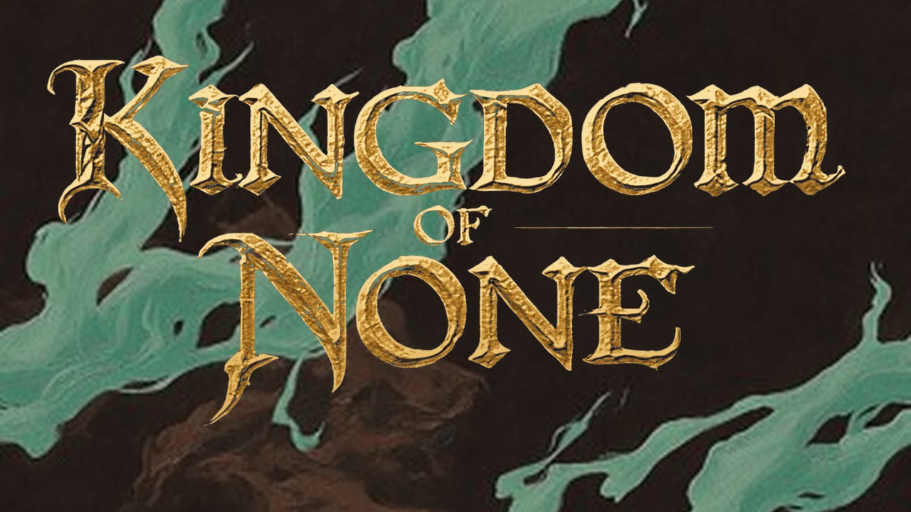
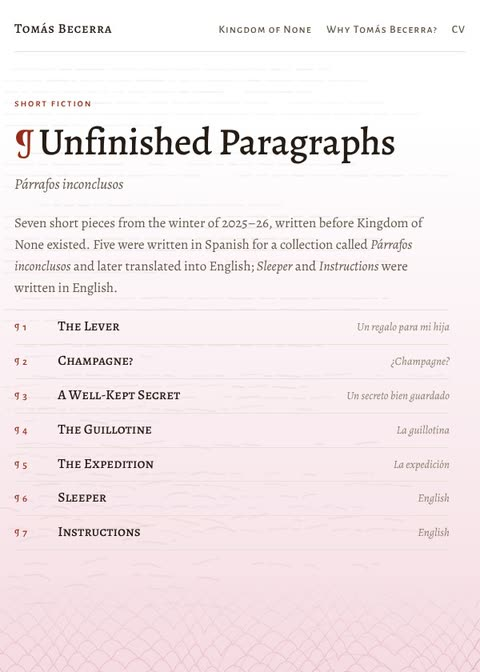

Kingdom of None, 2026– Turn-based roguelite card RPG, in development The world, its 36 territories, the card engine and a codex of everything built so far. Made in Godot 4. Visit the game’s site
Unfinished Paragraphs, 2025–26 Short fiction Seven stories written before Kingdom of None. Each one changes colour as you read. Read the stories Why Tomás Becerra?, 2026
Essay
From court rulings and modern-slavery reports to immersive rooms and a card game: on power, words and constraints.
Read the essay
Why Tomás Becerra?, 2026
Essay
From court rulings and modern-slavery reports to immersive rooms and a card game: on power, words and constraints.
Read the essay
 CV, 2026
One page, PDF
Judicial writer, modern-slavery researcher, narrative lead at IKONO, and now Kingdom of None.
Open the CV
CV, 2026
One page, PDF
Judicial writer, modern-slavery researcher, narrative lead at IKONO, and now Kingdom of None.
Open the CV